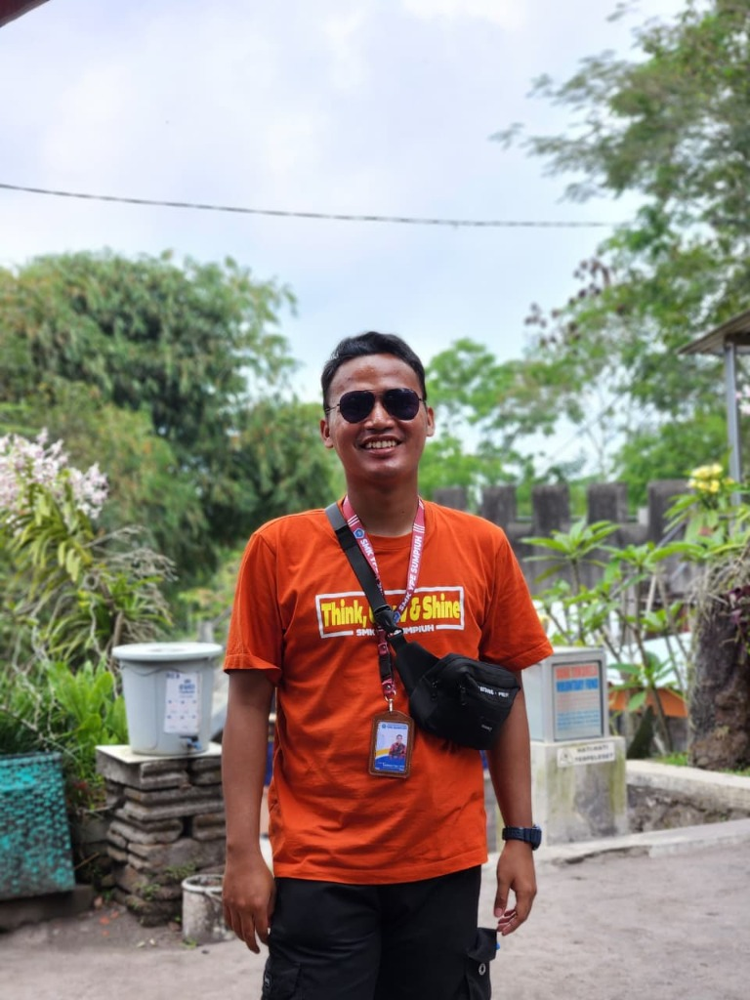

“E-Portofolio Refleksi Pembelajaran Mata Kuliah Semester II — Menampilkan telaah kritis dan artefak pembelajaran pada lima mata kuliah: PSE, PMAL, PPLM, Projek Kepemimpinan, dan IIP.”

Mahasiswa PPG Calon Guru di Balik E-Portofolio Pembelajaran Semester II
Mahasiswa PPG Calon Guru Gelombang 1 Tahun 2026 pada program studi Pendidikan Pancasila dan Kewarganegaraan di Universitas Muhammadiyah Purwokerto. E-portofolio ini menyajikan hasil refleksi kritis, asesmen autentik, dan dokumentasi artefak pembelajaran dari lima mata kuliah utama Semester II sebagai wujud komitmen menjadi guru profesional yang reflektif, adaptif, dan berpihak pada peserta didik.
Lima Mata Kuliah Semester II yang Direfleksikan Secara Kritis & Mendalam
Memahami dimensi sosial dan emosional dalam pendidikan — bagaimana kondisi emosional murid memengaruhi proses belajar, serta bagaimana guru merespons kebutuhan emosional peserta didik secara empati dan berkesinambungan.
Menggali konsep deep learning dalam pendidikan — merancang pembelajaran yang berpusat pada pemahaman bermakna dan asesmen autentik untuk mengukur perkembangan nyata peserta didik.
Praktik langsung di satuan pendidikan — Rancang → Ajar → Observasi → Refleksi → Evaluasi. Momen di mana teori akademik berpadu dengan dinamika faktual ruang kelas.
Membangun inisiatif kolaboratif dan kepemimpinan transformatif dalam dunia pendidikan — Ide → Perencanaan → Kolaborasi → Aksi Lapangan → Evaluasi Dampak.
Integrasi nilai-nilai keislaman sebagai kompas etik dan spiritual dalam menjalankan profesi pendidik — memposisikan mengajar sebagai amanah dan pengabdian mulia.
Pilih planet mata kuliah untuk membaca hasil telaah refleksi kritis dan membuka berkas artefak pembelajaran.
Koneksi · Kesadaran Sosial · Pengelolaan Diri · Keputusan Bertanggung Jawab
Pembelajaran sosial emosional menyadarkan saya bahwa kondisi emosional murid sangat memengaruhi proses belajar mereka. Sebagai calon guru, saya perlu hadir bukan hanya sebagai pengajar, tetapi sebagai sosok yang memahami dan merespons kebutuhan emosional murid secara penuh dan tulus.
Saya memahami bahwa PSE mencakup kompetensi kesadaran diri, pengelolaan diri, kesadaran sosial, keterampilan berelasi, dan pengambilan keputusan yang bertanggung jawab — yang semuanya perlu dibangun baik pada guru maupun murid secara bersamaan dan berkesinambungan.
Tantangan terbesar adalah mengintegrasikan PSE dalam pembelajaran yang sudah padat kurikulum, serta membangun kepekaan emosional di tengah berbagai karakter murid yang sangat beragam — semua itu membutuhkan kesabaran, keterampilan, dan waktu yang tidak singkat.
Saya ingin memulai setiap pembelajaran dengan check-in emosional sederhana, menciptakan ruang yang aman bagi murid untuk mengekspresikan diri, dan mendesain aktivitas yang menghargai keberagaman emosi murid dalam setiap sesi pembelajaran.
Pemahaman Mendalam · Asesmen Autentik · Berpikir Kritis · Evaluasi Holistik
Pengalaman belajar dan mengajar selama ini menunjukkan bahwa asesmen sering terasa terpisah dari pembelajaran. Mata kuliah ini menghubungkan keduanya menjadi satu proses yang saling menguatkan — asesmen bukan sekadar penilaian akhir, tetapi bagian dari proses belajar yang bermakna.
Saya memahami bahwa pembelajaran mendalam (deep learning) berfokus pada pemahaman bermakna, bukan hafalan. Asesmen lanjutan dirancang untuk mengukur kemampuan berpikir tingkat tinggi dan kompetensi nyata murid — bukan sekadar angka di atas kertas.
Menciptakan pembelajaran yang bermakna sekaligus merancang asesmen yang autentik membutuhkan waktu dan kreativitas yang tinggi, terutama dalam kondisi kelas dengan tingkat pemahaman murid yang sangat beragam dan keterbatasan waktu kurikulum.
Saya ingin menggeser fokus asesmen dari sekadar nilai angka menuju portofolio dan asesmen formatif yang mengukur pertumbuhan murid secara menyeluruh, serta merancang pembelajaran yang mengundang rasa ingin tahu dan mendorong berpikir kritis.
Rancang · Ajar · Observasi · Refleksi Kritis · Peningkatan Mutu
PPLM adalah momen di mana teori bertemu realita. Pengalaman langsung di sekolah membantu saya membangun identitas sebagai calon guru — menyadari apa yang saya kuasai dan apa yang masih perlu saya kembangkan untuk menjadi pendidik yang sesungguhnya.
Praktik langsung mengajarkan saya bahwa manajemen kelas, adaptasi terhadap kebutuhan murid, dan kemampuan membaca situasi adalah keterampilan yang tidak bisa hanya dipelajari dari buku — semua itu hanya bisa dikuasai melalui pengalaman nyata di lapangan.
Tantangan terbesar saya adalah beradaptasi dengan karakter murid yang beragam, menjaga keterlibatan aktif murid, serta mengelola waktu pembelajaran agar sesuai rencana tanpa kehilangan kebermaknaan — pengalaman ini membuka mata saya tentang kompleksitas dunia pendidikan.
Saya ingin lebih banyak mendengarkan murid sebelum merancang pembelajaran, menjadikan refleksi sebagai bagian rutin setiap sesi mengajar, dan berani berinovasi dalam metode pembelajaran yang lebih aktif, kontekstual, dan berpihak pada murid.
Visi Kepemimpinan · Kolaborasi Tim · Aksi Nyata · Dampak Sosial
Projek kepemimpinan mengingatkan saya bahwa kepemimpinan bukan tentang posisi, melainkan tentang bagaimana saya berkontribusi, mendengar, dan menggerakkan tim menuju tujuan bersama yang bermakna bagi semua pihak yang terlibat.
Saya memahami bahwa kepemimpinan yang efektif membutuhkan komunikasi yang empatik, kemampuan mendelegasikan tugas, dan kesediaan untuk belajar dari setiap anggota tim — bukan hanya memimpin dari depan, tetapi juga menopang dari dalam.
Menyatukan berbagai pandangan dan gaya kerja anggota tim, menjaga motivasi kelompok di tengah kesibukan masing-masing, serta membuat keputusan bersama dalam waktu terbatas adalah tantangan nyata yang saya hadapi dan pelajari banyak darinya.
Saya ingin lebih proaktif dalam mengambil peran, lebih terbuka mendengar ide anggota tim, dan belajar memberikan umpan balik yang konstruktif — sehingga kolaborasi menjadi lebih produktif, harmonis, dan menyenangkan bagi semua.
Ilmu · Iman · Amal Shalih · Akhlak Mulia
Nilai-nilai yang dipelajari dalam IIP menguatkan fondasi saya sebagai calon guru — bahwa mengajar adalah sebuah ibadah dan amanah yang harus diemban dengan integritas, keikhlasan, dan semangat untuk terus menuntut ilmu sepanjang hayat.
Saya memahami bahwa dalam Islam, ilmu dan pendidikan tidak dapat dipisahkan dari nilai-nilai akhlak dan tujuan mulia. Pendidikan bukan sekadar transfer pengetahuan, tetapi pembentukan karakter yang holistik dan berorientasi pada kebaikan dunia akhirat.
Tantangan terbesar adalah konsistensi antara nilai yang saya yakini dengan praktik nyata sehari-hari — menjaga keteladanan dalam sikap, ucapan, dan tindakan sebagai seorang calon pendidik di tengah berbagai situasi yang tidak selalu mudah.
Saya ingin menjadikan nilai-nilai yang dipelajari sebagai kompas dalam setiap keputusan sebagai guru — mengajar dengan penuh keikhlasan, meneladankan akhlak yang baik, dan selalu mengingat tujuan mulia dari profesi pendidik yang mulia ini.
Ringkasan Refleksi · Tautan Dokumen PDF · Sintesis Pembelajaran Semester II
Refleksi kritis tentang dimensi sosial emosional untuk menciptakan pembelajaran yang aman, nyaman, dan berpihak pada peserta didik.
Refleksi tentang perancangan deep learning dan instrumen asesmen autentik yang mendorong daya nalar tingkat tinggi peserta didik.
Refleksi pengalaman faktual di sekolah mitra, menajamkan keterampilan manajemen kelas dan mematangkan identitas calon pendidik.
Refleksi kepemimpinan kolaboratif, kemampuan memfasilitasi inisiatif, dan manajemen solusi bersama tim untuk dampak nyata.
Refleksi penghayatan nilai-nilai Islam sebagai fondasi spiritual, moral, dan etika profesional dalam menunaikan amanah mengajar.
Dokumen telaah refleksi kritis Pembelajaran Sosial Emosional dalam format PDF resmi.
Dokumen telaah refleksi kritis Pembelajaran Mendalam & Asesmen Lanjutan dalam format PDF resmi.
Dokumen telaah refleksi kritis Praktik Pengalaman Lapangan Mandiri dalam format PDF resmi.
Dokumen telaah refleksi kritis Projek Kepemimpinan dalam format PDF resmi.
Dokumen telaah refleksi kritis Islam dan Ilmu Pendidikan dalam format PDF resmi.
Perkuliahan Semester II memperkaya kompetensi akademik dan pedagogik saya melalui telaah lima mata kuliah utama. Mulai dari pemahaman kebutuhan sosio-emosional peserta didik (PSE), penguasaan asesmen mendalam (PMAL), pengujian kompetensi mengajar secara nyata di sekolah (PPLM), penempaan jiwa kepemimpinan kolaboratif (Projek Kepemimpinan), hingga penguatan fondasi spiritual dan etik keguruan (IIP). Seluruh artefak dan refleksi ini menjadi landasan kokoh bagi pengembangan keprofesian berkelanjutan sebagai guru Pendidikan Pancasila.
Dari Penguasaan Konsep Menuju Pembentukan Karakter Guru Profesional
Refleksi mendalam pada Semester II secara fundamental merekonstruksi cara pandang saya mengenai profesi pendidik. Guru profesional bukan sekadar pengajar di ruang kelas, melainkan teladan yang hadir secara utuh — merespons kebutuhan sosial-emosional murid, merancang asesmen autentik yang memanusiakan pembelajaran, mengelola kelas secara adaptif di lapangan nyata, memimpin kolaborasi tim yang berdampak, serta menjiwai nilai-nilai ibadah dan amanah. Refleksi kelima mata kuliah ini menegaskan komitmen saya untuk terus belajar dan bertumbuh demi kemajuan peserta didik.
Membangun kolaborasi profesional dan berbagi praktik baik dalam dunia pendidikan.
KOMITMEN PENDIDIK REFLEKTIF SEPANJANG HAYAT
“Menjadi guru bukan tentang merasa telah serba tahu, melainkan kerendahan hati untuk terus merefleksikan diri, bertumbuh, dan mengabdi seutuhnya demi kemajuan peserta didik.”